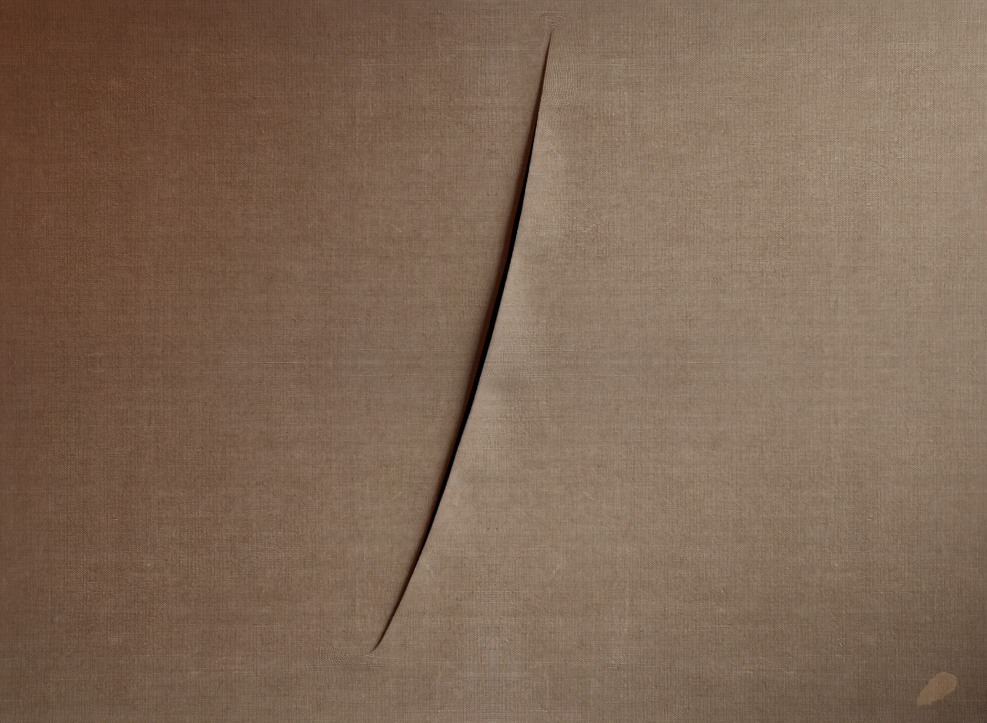
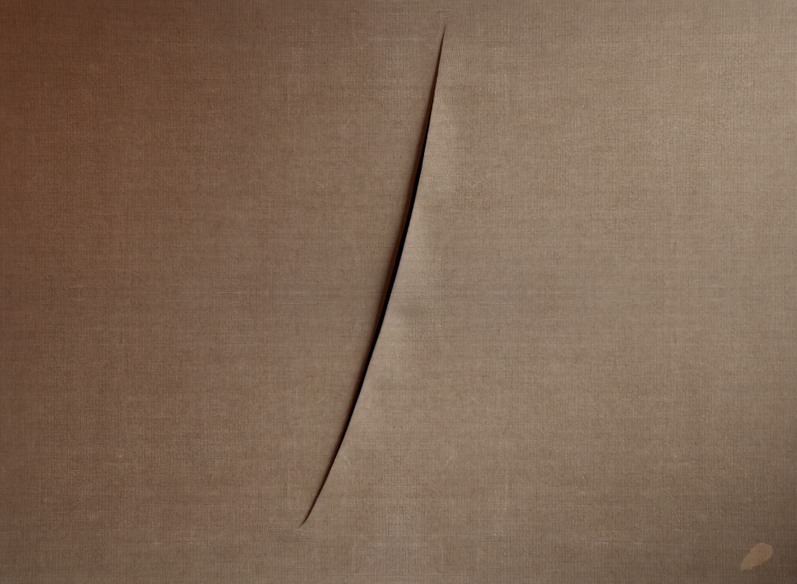

2 min. di lettura
Ciò che però conferisce valore al taglio sulla tela è il gesto capace di generarlo. Questo è il presupposto concettuale dietro ai capolavori di Fontana: la consapevolezza che l’arte sia eterna ma non immortale.
Essa è eterna perché destinata a rimanere tale in quanto gesto e in quanto frutto dello spirito creativo dell’essere umano, ma è mortale perché la materia fisica di cui è composta andrà a degradarsi e poi a dissolversi col trascorrere del tempo. Squarciando la tela, compie un gesto, sancisce il primato della creatività sulla materia, rendendo così l’opera eterna.

Per certi versi, Fontana può essere considerato uno dei precursori dell’arte concettuale, posto lungo la strada che porta da Duchamp all’arte che si sarebbe sviluppata a partire dalla metà degli anni Sessanta.
Nonostante tutto ciò la radicalità delle opere di Fontana gli ha sempre riservato un atteggiamento spregiativo da parte dei critici: “I critici mi hanno sempre malmenato”, ebbe a dire in un’intervista nel 1963. “Ma io non me ne sono mai preoccupato, sono andato avanti lo stesso e non ho mai tolto il saluto a nessuno. Per anni mi hanno chiamato ‘quello dei buchi’, con anche un po’ di commiserazione.
Ma oggi vedo che i miei buchi e i miei tagli hanno creato un gusto, sono accettati e trovano perfino applicazioni pratiche. Nei bar e nei teatri si fanno soffitti a buchi. Perché oggi, vede, anche la gente della strada capisce le nuove forme. Sono gli artisti, purtroppo, che capiscono meno”.
Essa è eterna perché destinata a rimanere tale in quanto gesto e in quanto frutto dello spirito creativo dell’essere umano, ma è mortale perché la materia fisica di cui è composta andrà a degradarsi e poi a dissolversi col trascorrere del tempo. Squarciando la tela, compie un gesto, sancisce il primato della creatività sulla materia, rendendo così l’opera eterna.

Attesa, 1960
Per certi versi, Fontana può essere considerato uno dei precursori dell’arte concettuale, posto lungo la strada che porta da Duchamp all’arte che si sarebbe sviluppata a partire dalla metà degli anni Sessanta.
Nonostante tutto ciò la radicalità delle opere di Fontana gli ha sempre riservato un atteggiamento spregiativo da parte dei critici: “I critici mi hanno sempre malmenato”, ebbe a dire in un’intervista nel 1963. “Ma io non me ne sono mai preoccupato, sono andato avanti lo stesso e non ho mai tolto il saluto a nessuno. Per anni mi hanno chiamato ‘quello dei buchi’, con anche un po’ di commiserazione.
Ma oggi vedo che i miei buchi e i miei tagli hanno creato un gusto, sono accettati e trovano perfino applicazioni pratiche. Nei bar e nei teatri si fanno soffitti a buchi. Perché oggi, vede, anche la gente della strada capisce le nuove forme. Sono gli artisti, purtroppo, che capiscono meno”.